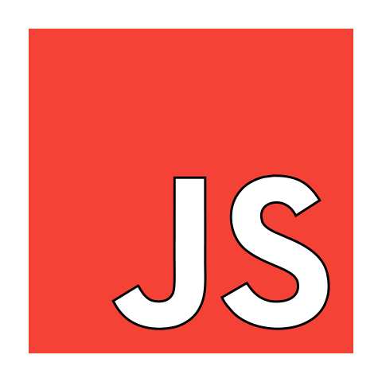

JavaScript powstał 4 grudnia 1995 roku. Jest wykonywany przez silnik JavaScriptu w przeglądarce, po tym jak HTML i CSS zostaną skompletowane w stronę internetową.
Jest językiem obiektowym, jeśli zastosujemy na stringu funkcję taką jak length czy charAt, to język niejawnie tworzy z niego obiekt, a potem wywołuje daną funkcję.
…………………………………………………Jest to przycisk otwierajacy nowa strone………………………………………………………….
window.open("obraz1.html","okienko","toolbar=no,directories=no,menubar=no,height=280,width=160,top=200,left=200");
……………………………Jest to obrazek……………………………………………………………………………….
toolbar=no jest to panel z roznymi funkcjami
directories=no, organizuje pliki
menubar=no, jest to panel graficzny
height=280, jest to wysokosc
width=160, jest to szerokosc
top=200, jest to gora
left=200 jest to lewa strona
window.close()
……………………………jest to polecenie zamykajace okno………………………………………………………………………………
